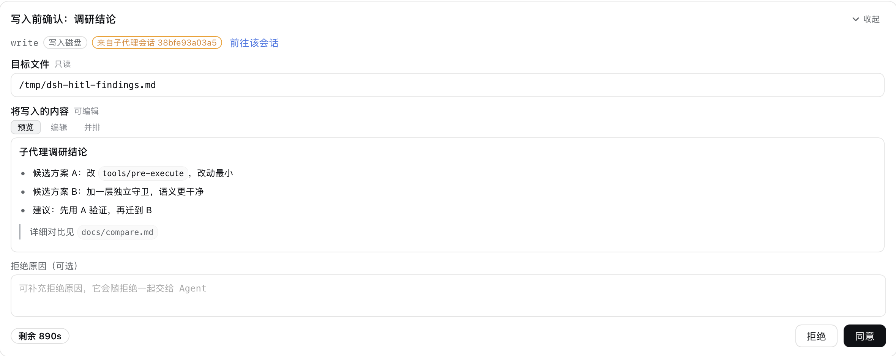

Interface
一张卡片，多种渲染
同一张决策卡片里，按字段呈现为并排 diff、文本输入或 Markdown 预览。
Made for DSH
专为 DeepSeek Harness 打造
子代理直通
子代理（spawn/fork）内部的工具调用同样经过这道闸门，并出现在你当前查看的会话里，附「前往该会话」跳转。
Service API
ctx.hitl.protect(...) 一行挂载；传入 owner 即随插件生命周期自动解绑。
Fail-closed
无浏览器决策时默认拒绝，绝不放任工具运行。

// 挂载一个工具，传入调用方 ctx 自动解绑
ctx.hitl.protect('bash', {
title: 'Run this command?',
countdown: { seconds: 30, action: 'reject' },
reject: { feedback: true },
}, ctx)Quickstart
30 秒上手
// 安装 dsh-hitl
dsh plugin --profile add dsh-hitl01通过配置挂载
在 cordis.patch.yml 声明要保护的工具，目标工具零改动。
# cordis.patch.yml
- id: hitl
name: 'dsh-hitl'
config:
protect:
- tool: bash
title: Confirm before running
countdown: { seconds: 30, action: reject }02从代码挂载
注入 hitl 服务并调用 protect。
export const inject = ['hitl']
export function apply(ctx) {
ctx.hitl.protect('bash', {
title: 'Confirm?',
countdown: { seconds: 30, action: 'reject' },
}, ctx) // owner 自动解绑
}装完刷新一次页面即可生效；卸载用 dsh plugin --profile <profile> remove dsh-hitl。